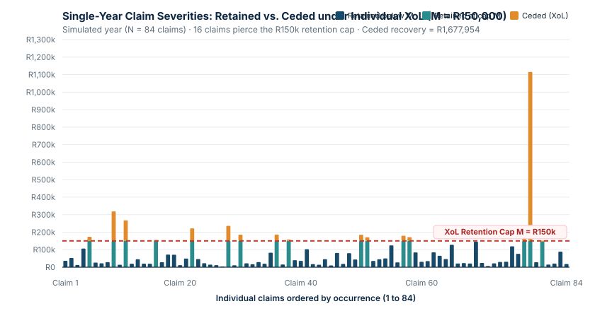
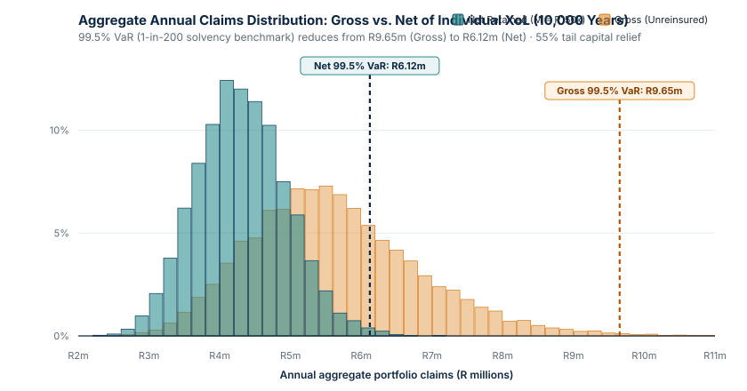

Stochastic Claims Simulation and Excess of Loss Reinsurance in R
General Insurance
Applied Computing
Reinsurance
Capital Modelling
R
Applied actuarial computing in R: collective risk simulation, individual Excess of Loss (XoL) claim capping, Retained vs. Ceded loss visualisations, and 99.5% VaR tail-capital relief.
Author
Ntando Sithole
Published
16 November 2026
Introduction
In general insurance and cell-captive management, aggregate claims volatility is rarely driven by routine attritional losses alone. Instead, a small number of high-severity claims from a right-skewed loss distribution can distort annual profitability, erode cell capital, and inflate solvency capital requirements under frameworks such as Solvency Assessment and Management (SAM).
An Individual Excess of Loss (XoL) reinsurance treaty addresses this directly by capping each individual claim at a chosen retention threshold \(M\) and ceding the excess layer above \(M\) to the reinsurer.
This article combines closed-form loss-distribution theory with Monte Carlo stochastic simulation in R to demonstrate:
how individual heavy-tailed claims behave before and after an Excess of Loss retention cap \(M\);
how analytical limited expected value (LEV) formulae reconcile with simulated retained and ceded claim recoveries;
how capping individual claims compresses the upper tail of the annual aggregate portfolio loss distribution; and
how changing the retention \(M\) trades off expected ceded premium against 1-in-200 tail capital relief (\(\text{VaR}_{0.995}\)).
Mathematical Framework
Collective Risk Model (Gross of Reinsurance)
Let \(N\) denote the number of claims occurring in a one-year policy period and \(X_1, X_2, \dots, X_N\) denote the individual ground-up claim severities. Under the standard collective risk model:
\(N \sim \text{Poisson}(\lambda)\), with \(\operatorname{E}[N] = \operatorname{Var}(N) = \lambda\);
\(X_1, X_2, \dots\) are independent and identically distributed positive random variables, independent of \(N\); and
the gross annual aggregate portfolio loss is
\[
S_{\text{gross}} = \sum_{i=1}^{N} X_i,
\qquad \text{with } S_{\text{gross}} = 0 \text{ when } N = 0.
\]
When individual claim severities follow a two-parameter Lognormal distribution, \(\ln X_i \sim \mathcal{N}(\mu, \sigma^2)\), the untamed k-th raw moment is \(\operatorname{E}[X^k] = \exp\!\left(k\mu + \tfrac{1}{2}k^2\sigma^2\right)\). By Wald’s identities for a compound Poisson process,
Individual Excess of Loss (XoL) Treaty at Retention \(M\)
Under an unlimited per-risk Excess of Loss treaty with attachment (retention) point \(M > 0\), each ground-up claim \(X_i\) is partitioned into two orthogonal layers:
\[
Y_i = \min(X_i, M) \quad \text{(Retained by the insurer / cell)},
\]
\[
Z_i = \max(X_i - M, 0) \quad \text{(Ceded to the XoL reinsurer)},
\]
such that \(X_i = Y_i + Z_i\) holds identically for every claim. The net retained and ceded annual aggregate losses are therefore
\[
S_{\text{net}}(M) = \sum_{i=1}^{N} \min(X_i, M),
\qquad
S_{\text{ceded}}(M) = \sum_{i=1}^{N} \max(X_i - M, 0).
\]
For \(X \sim \text{Lognormal}(\mu, \sigma^2)\), the limited expected value \(\operatorname{E}[\min(X, M)]\) admits the exact closed-form expression:
where \(\Phi(\cdot)\) is the standard normal cumulative distribution function. While these expressions give exact means and variances for \(S_{\text{net}}(M)\), evaluating high quantiles such as the 99.5% Value-at-Risk (\(\text{VaR}_{0.995}\)) and 99% Tail Value-at-Risk (\(\text{TVaR}_{0.99}\)) requires numerical approximation or Monte Carlo simulation.
Interactive Claims & Reinsurance Simulation Lab
Use the controls below to test how an Individual Excess of Loss retention cap \(M\) reshapes both single-year individual claim recoveries and the multi-year aggregate portfolio loss distribution across 3,000 simulated years.
Reproducible Implementation in R
1. Portfolio Parameters and Analytical Limited Expected Values
We parameterise a synthetic short-term portfolio with \(\lambda = 80\) expected claims per annum and Lognormal individual severities (\(\mu = 10.5\), \(\sigma = 1.15\)), giving an untamed mean severity of \(\text{R}70{,}351\) and a gross expected annual portfolio loss of \(\text{R}5.63\text{ million}\).
set.seed(2026)# Portfolio parameterslambda <-80mu_log <-10.5sd_log <-1.15retention_base <-150000n_sims <-10000format_rand <-function(x) {paste0("R", format(round(x, 0), big.mark =",", scientific =FALSE))}# Exact closed-form Limited Expected Value E[min(X, M)^k] for Lognormal(mu, sigma)lognormal_lev <-function(M, mu, sigma, k =1) { raw_moment <-exp(k * mu +0.5* k^2* sigma^2)if (is.infinite(M)) return(raw_moment) d_shift <- (log(M) - mu - k * sigma^2) / sigma d_base <- (log(M) - mu) / sigma exceed <-1-pnorm(d_base) raw_moment *pnorm(d_shift) + (M^k) * exceed}retentions <-c(100000, 150000, 250000, 500000, Inf)analytical_table <-do.call(rbind, lapply(retentions, function(M) { ex <-lognormal_lev(Inf, mu_log, sd_log, k =1) ey <-lognormal_lev(M, mu_log, sd_log, k =1) ey2 <-lognormal_lev(M, mu_log, sd_log, k =2) ez <- ex - ey p_pierce <-if (is.infinite(M)) 0else1-pnorm((log(M) - mu_log) / sd_log)data.frame(Treaty_Structure =if (is.infinite(M)) "Gross (Unreinsured)"elsepaste0("XoL M = ", format_rand(M)),Pierce_Prob =sprintf("%.2f%%", 100* p_pierce),Mean_Retained_Sev =format_rand(ey),Mean_Ceded_Sev =format_rand(ez),Expected_Net_Agg =format_rand(lambda * ey),Expected_Ceded_Agg =format_rand(lambda * ez),Analytical_SD_Net =format_rand(sqrt(lambda * ey2)) )}))knitr::kable( analytical_table,caption ="Analytical collective risk moments across Individual XoL retention levels")
Analytical collective risk moments across Individual XoL retention levels
Treaty_Structure
Pierce_Prob
Mean_Retained_Sev
Mean_Ceded_Sev
Expected_Net_Agg
Expected_Ceded_Agg
Analytical_SD_Net
XoL M = R100,000
18.92%
R46,632
R23,719
R3,730,532
R1,897,535
R516,866
XoL M = R150,000
10.87%
R53,820
R16,530
R4,305,632
R1,322,435
R638,966
XoL M = R250,000
4.67%
R61,002
R9,349
R4,880,155
R747,912
R793,759
XoL M = R500,000
1.13%
R66,911
R3,440
R5,352,860
R275,207
R978,346
Gross (Unreinsured)
0.00%
R70,351
R0
R5,628,067
R0
R1,218,966
At the baseline retention of \(M = \text{R}150{,}000\), approximately \(10.87\%\) of individual claims breach the treaty attachment point, ceding \(\text{R}1.32\text{m}\) of expected annual claims to the reinsurer while cutting the standard deviation of annual retained aggregate claims by nearly half (from \(\text{R}1.22\text{m}\) to \(\text{R}0.64\text{m}\)).
2. Visualising Single-Year Claim Capping (\(Y_i\) vs. \(Z_i\))
Before aggregating across thousands of simulated years, it is instructive to inspect a single simulated policy year claim by claim. Every claim below \(M = \text{R}150{,}000\) is retained in full; every claim above \(M\) is truncated at the dashed retention threshold, with the excess layer transferred to the XoL reinsurer.
# Simulate a single representative policy yearn_claims_year <-rpois(1, lambda = lambda)year_claims <-rlnorm(n_claims_year, meanlog = mu_log, sdlog = sd_log)retained_layer <-pmin(year_claims, retention_base)ceded_layer <-pmax(year_claims - retention_base, 0)# Stacked bar plot of Retained vs. Ceded portions for each claimbarplot(rbind(retained_layer, ceded_layer) /1e3,beside =FALSE,border =NA,col =c("#174a69", "#e08b2c"),xlab ="Individual claims ordered by occurrence",ylab ="Claim severity (R thousands)",main ="Single-Year Claim Severities: Retained vs. Ceded under XoL (M = R150,000)")abline(h = retention_base /1e3, col ="#c0392b", lwd =2, lty =2)

Simulated individual claims in a single policy year under an Individual Excess of Loss retention cap of R150,000.
3. Monte Carlo Simulation of Aggregate Loss & Tail Capital (\(\text{VaR}_{0.995}\))
We now simulate \(10{,}000\) independent portfolio years in R to evaluate the full aggregate distribution and quantify tail risk under the 99.5% Value-at-Risk (\(\text{VaR}_{0.995}\))—the 1-in-200 solvency benchmark used in SAM standard formula calibration—and 99% Tail Value-at-Risk (\(\text{TVaR}_{0.99}\)).
simulate_collective_xol <-function(n_sims, lambda, mu_log, sd_log, retentions) { claim_counts <-rpois(n_sims, lambda = lambda) results <-matrix(0, nrow = n_sims, ncol =length(retentions))colnames(results) <-as.character(retentions)for (sim inseq_len(n_sims)) { n <- claim_counts[sim]if (n >0L) { x <-rlnorm(n, meanlog = mu_log, sdlog = sd_log)for (j inseq_along(retentions)) { M <- retentions[j] results[sim, j] <-if (is.infinite(M)) sum(x) elsesum(pmin(x, M)) } } } results}sim_matrix <-simulate_collective_xol(n_sims = n_sims,lambda = lambda,mu_log = mu_log,sd_log = sd_log,retentions = retentions)gross_vec <- sim_matrix[, "Inf"]sim_summary <-do.call(rbind, lapply(seq_along(retentions), function(j) { M <- retentions[j] net <- sim_matrix[, j] ced <- gross_vec - net mean_net <-mean(net) sd_net <-sd(net) var_95 <-unname(quantile(net, probs =0.95)) var_995 <-unname(quantile(net, probs =0.995)) tvar_99 <-mean(net[net >=quantile(net, probs =0.99)]) tail_cap <- var_995 - mean_netdata.frame(Scenario =if (is.infinite(M)) "Gross (No XoL)"elsepaste0("XoL M = ", format_rand(M)),Sim_Mean_Net =format_rand(mean_net),Sim_Mean_Ceded =format_rand(mean(ced)),Sim_SD_Net =format_rand(sd_net),VaR_95 =format_rand(var_95),VaR_99_5_SAM =format_rand(var_995),TVaR_99 =format_rand(tvar_99),Tail_Capital_995 =format_rand(tail_cap) )}))knitr::kable( sim_summary,caption ="10,000-year Monte Carlo aggregate loss quantiles and 99.5% VaR tail capital requirement")
10,000-year Monte Carlo aggregate loss quantiles and 99.5% VaR tail capital requirement
Scenario
Sim_Mean_Net
Sim_Mean_Ceded
Sim_SD_Net
VaR_95
VaR_99_5_SAM
TVaR_99
Tail_Capital_995
XoL M = R100,000
R3,735,768
R1,895,715
R517,491
R4,602,442
R5,176,721
R5,222,645
R1,440,953
XoL M = R150,000
R4,310,884
R1,320,599
R639,361
R5,381,138
R6,122,150
R6,153,374
R1,811,266
XoL M = R250,000
R4,883,078
R748,405
R792,589
R6,229,805
R7,102,100
R7,182,464
R2,219,022
XoL M = R500,000
R5,354,208
R277,275
R975,909
R7,052,218
R8,130,762
R8,230,426
R2,776,554
Gross (No XoL)
R5,631,483
R0
R1,225,900
R7,807,074
R9,652,753
R10,105,247
R4,021,270
The distributional impact is illustrated below by overlaying the \(10{,}000\)-year simulated histogram of Gross Aggregate Claims (\(S_{\text{gross}}\)) against Net Retained Aggregate Claims (\(S_{\text{net}}\) at \(M = \text{R}150{,}000\)).
# Overlaid Gross vs. Net Aggregate Annual Loss Distributionhist( gross_vec /1e6,breaks =45,freq =FALSE,col =rgb(0.88, 0.55, 0.17, 0.42),border ="#d47a18",xlim =c(2, 11),xlab ="Annual aggregate portfolio claims (R millions)",main ="Aggregate Annual Claims Distribution: Gross vs. Net of Individual XoL")hist( sim_matrix[, "150000"] /1e6,breaks =45,freq =FALSE,col =rgb(0.16, 0.55, 0.55, 0.58),border ="#174a69",add =TRUE)abline(v =quantile(gross_vec, 0.995) /1e6, col ="#b85400", lwd =2, lty =2)abline(v =quantile(sim_matrix[, "150000"], 0.995) /1e6, col ="#0d2742", lwd =2, lty =2)

Overlaid 10,000-year simulated distribution of Gross vs. Net annual aggregate claims under an Individual Excess of Loss retention of R150,000.
Actuarial & Commercial Interpretation
Tail Compression vs. Mean Reduction: At \(M = \text{R}150{,}000\), ceding \(23.5\%\) of expected ground-up claims (\(\text{R}1.32\text{m}\) out of \(\text{R}5.63\text{m}\)) reduces the 1-in-200 unexpected tail deviation (\(\text{VaR}_{0.995} - \operatorname{E}[S]\)) from \(\text{R}4.02\text{m}\) to \(\text{R}1.81\text{m}\)—a 55.0% reduction in tail capital strain. This disproportionate capital efficiency is why non-proportional Excess of Loss treaties are central to cell-captive structuring and SAM capital management.
Analytical Reconciliation as a Model Control: Comparing simulated sample averages (\(\text{R}4{,}310{,}884\) net mean; \(\text{R}639{,}361\) net standard deviation) against exact closed-form Wald identities (\(\text{R}4{,}305{,}632\) and \(\text{R}638{,}966\)) provides an immediate first-line actuarial control check confirming that the Monte Carlo generator is unbiased before relying on its extreme tail quantiles.
Selecting the Optimal Retention \(M\): In practice, reinsurers load the pure technical ceded premium \(\operatorname{E}[S_{\text{ceded}}(M)]\) for parameter uncertainty, expense, and cost of capital. An actuary evaluates whether the marginal reduction in the insurer’s or cell’s cost of holding Solvency Capital Requirement (SCR) exceeds the reinsurer’s loading above expected recoveries.
Model Limitations
To keep the computational mechanics transparent, this model omits several features required in production reinsurance pricing and SAM capital models:
Upper Treaty Limits and Reinstatements: Commercial XoL layers are bounded (e.g., \(\text{R}850{,}000\text{ xs R}150{,}000\)) with limited free or paid reinstatements rather than unlimited vertical cover.
Aggregate Deductibles and Stop-Loss: Many cell-captive arrangements combine per-risk XoL with an annual aggregate deductible (AAD) or aggregate stop-loss cap.
Parameter and Contagion Uncertainty: Using a fixed Poisson intensity \(\lambda\) ignores latent catastrophe clustering or inflation shock; replacing Poisson with a Negative Binomial (Poisson–Gamma mixture) introduces contagious frequency volatility.
Claims Inflation and Settlement Delays (IBNR): Long-tailed classes require projecting inflation between occurrence and settlement, as inflation erodes the real value of a fixed nominal retention \(M\) over time (the leveraged inflation effect on XoL layers).